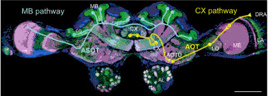

アリの脳と旅の記憶¶
アリはその小さな脳に驚異的な能力を持っていることが分かってきた [Roessler] 。
砂漠のアリ(Cataglyphis)は、餌(主に節足動物の死骸)を探して酷熱の中を1km以上の距離を歩きまわるが、一度餌を見つけると、巣までほぼ直線のルートをとって戻ってくるそうである。それができないと、酷暑の中での作業時間制限を越えて、死んでしまう。往路では、主に頭の中のコンパス 1 と歩数とから自らの位置を記録する。積分誤差があるために、それだけでは復路には巣のおおよその位置しか分からない。そのため、巣の近くにくると、景色の記憶にたよる。また、巣の周囲や巣穴からの匂いも記憶している [Huber] 。
その一生はさらに興味深い。生まれて最初の4週間は真っ暗な巣穴の中ですごす。次いで、2-3日は巣穴の周りをうろついて、この間に航行術を学ぶ。最後に7日間を餌探しの長期遠征を繰り返して、その生涯を終える。
図はCataglyphisの脳の顕微鏡写真である [Roessler] 。  大きな蟻なので、差し渡しは2mm弱ある(図中スケールは200 μm)。2つの視覚情報パスが示されている。図右側にCX pathwayと記してあって、DRA 2 から中心複合体（CX: central complex）に達しているのが、天空コンパスに関わるパスである。左側に"MB pathway"と記してあって、キノコ体(MB: mushroom body) 3 に届いているのが、景観情報に関わっているとされるパスである。
Roesslerによると、天空コンパス記憶は短寿命であり、数時間で消失するが、景観記憶は生涯保たれるらしい。コンパス情報は経路積分によって自分の座標位置を求めるためのデータに過ぎないので、その都度の計算が済んでしまえば、保存しておく必要はないのであろう。それに対して、景観記憶の方は多く蓄積するほど有用性が増す 4 。
かくて、砂漠のアリは生涯の終わりに、さまざまな旅の記憶を持って死を迎えることができるのか。
- 1
昆虫は天空の偏光パターンから方向を検出するコンパスを持っている。このコンパス機能については [Sakura] に詳しい。
- 2
DRA(dorsal rim area)は複眼の偏光受容に特化した領域。
- 3
昆虫における連想学習や記憶のプロセスを司るニューロン基質としてのMBの機能・構成はさかんに研究されている。
- 4
「アボリジニの記憶術」では、暗記したいもの(物の名前など)を景観中の特定の細部に結びつける。このとき、景観を単に静的イメージとするのではなくて、その中を移動する旅のイメージを加えるといいらしい。
- Huber
Roman Huber and Markus Knaden, Desert ants possess distinct memories for food and nest odors, PNAS October 9, 2018 115 (41) 10470-10474; first published September 24, 2018; https://doi.org/10.1073/pnas.1809433115.
- Roessler(1,2)
Wolfgang Rössler, Neuroplasticity in desert ants (Hymenoptera: Formicidae) – importance for the ontogeny of navigation, Myrmecol. News 29: 1-20, ISSN 1997-3500 myrmecologicalnews.org doi: 10.25849/myrmecol.news_029:001, 9 January 2019. Licensed under CC BY 4.0.
- Sakura
佐倉 緑、昆虫の偏光コンパスの神経機構、比較生理生化学 32(2015)195-204)。